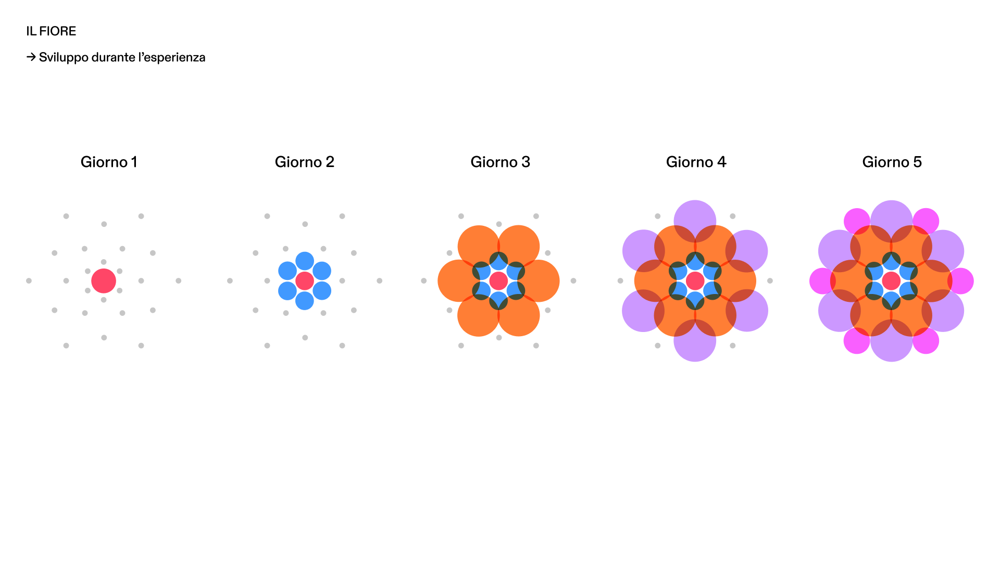
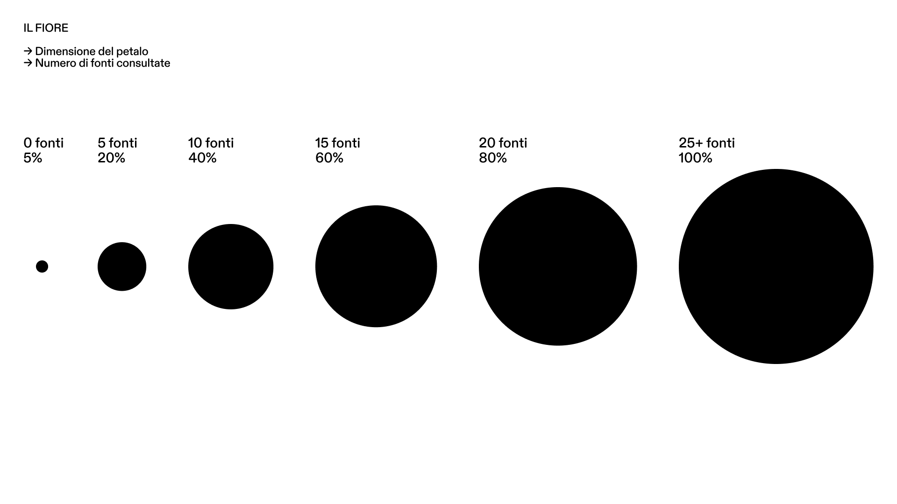
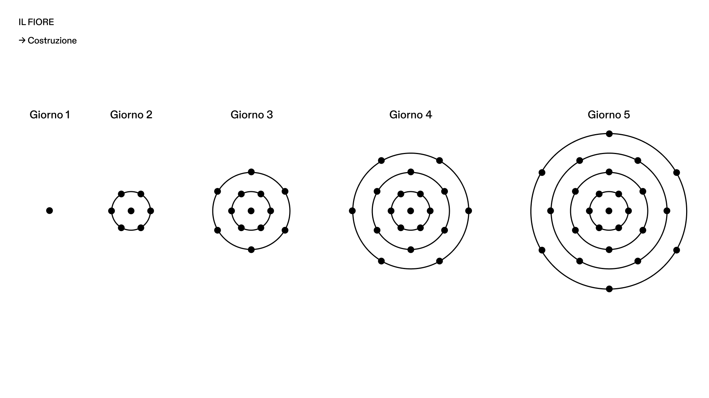
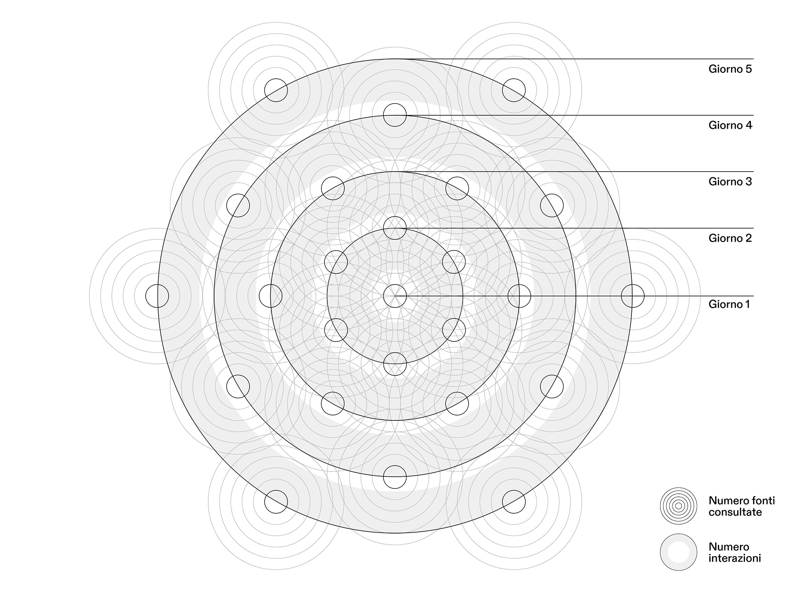
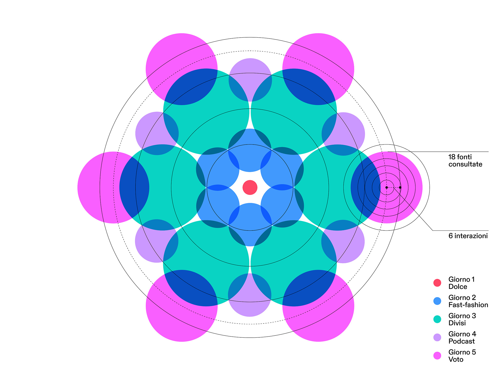

Today for tomorrow
VOTE responds to young people’s growing disengagement from democratic participation. Research identified three recurring barriers: inaccessible information, political disinterest and the perception that voting has little impact.
VOTE turns democratic participation into an active experience. Through a web app and interactive school monitors, students explore current issues, discuss them and experience voting firsthand. The system visualizes individual and collective perspectives, then closes each session with a weekly summary that invites reflection on the meaning of voting.
An interactive experience where tomorrow’s voters learn by participating.
The project turns democracy from an abstract idea into concrete action for high school students. Its interactive system guides them through exploration, debate and informed decision-making, foregrounding the value of discussion and representation.
This section borrows familiar patterns from social platforms to make learning intuitive. Daily topics appear in a Reel-style feed that alternates expert audio with selected articles and blogs. Students can compare perspectives, explore key issues, and save or share every source—turning everyday digital habits into a participatory learning experience.



The interface balances authority with engagement through clear navigation and dynamic visuals. A modular system adapts from the web app to school monitors, while motion reinforces progression, participation and a consistent visual identity.


The avatar makes each student’s participation and growth visible: every choice contributes to its evolution. The same view gathers voting history, saved articles and audio, and interactions such as comments, likes and discussion threads.
At the end of the experience, a Spotify Wrapped–inspired summary turns the collected data into familiar, accessible visuals. It highlights the most active class, the most debated topic and weekly voting trends, encouraging reflection while reinforcing a shared sense of community.